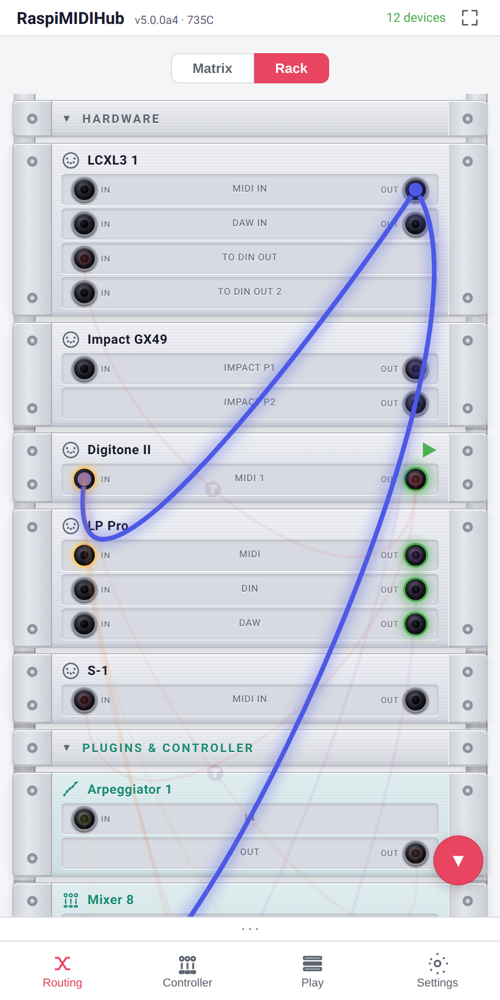
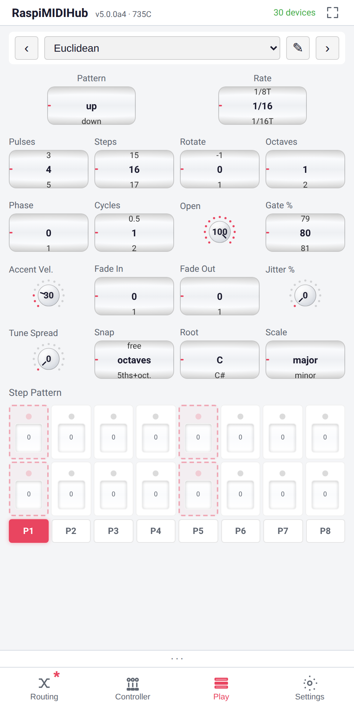
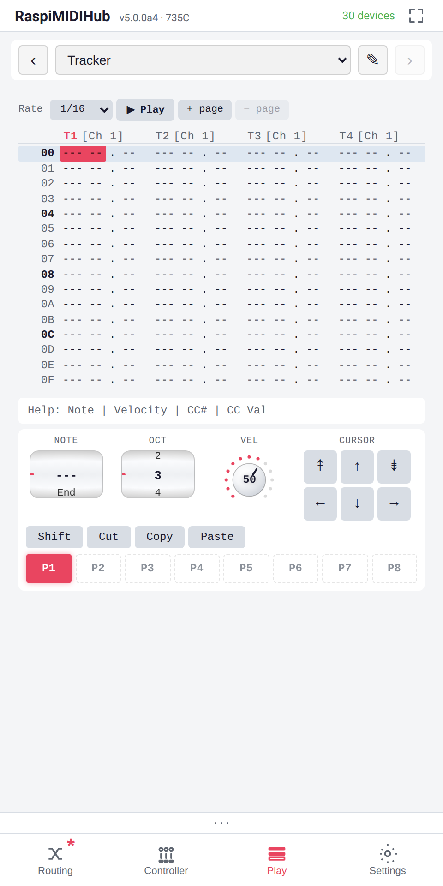
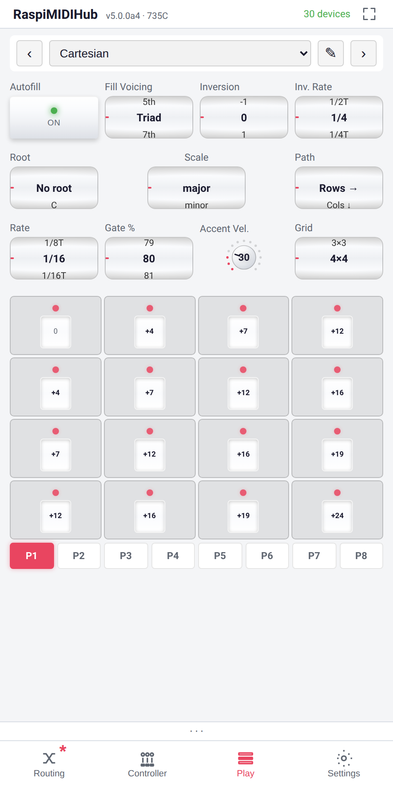
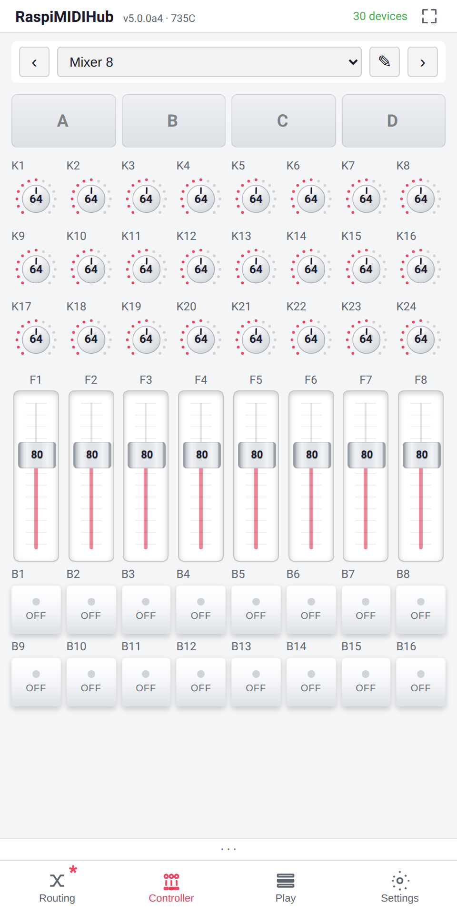
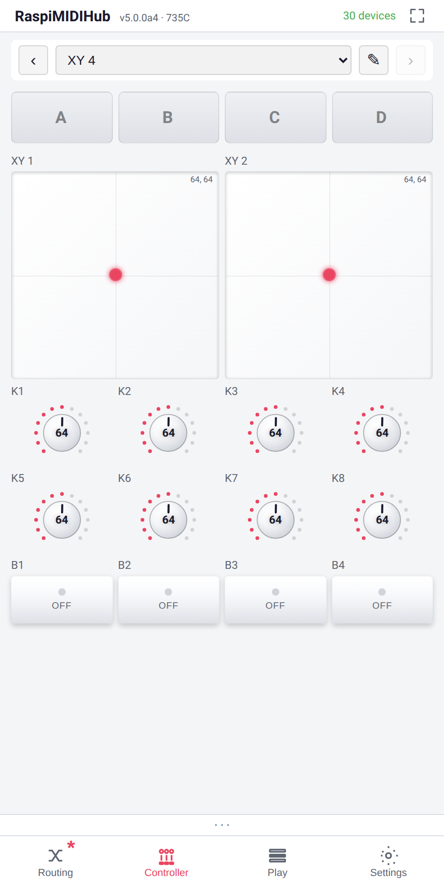
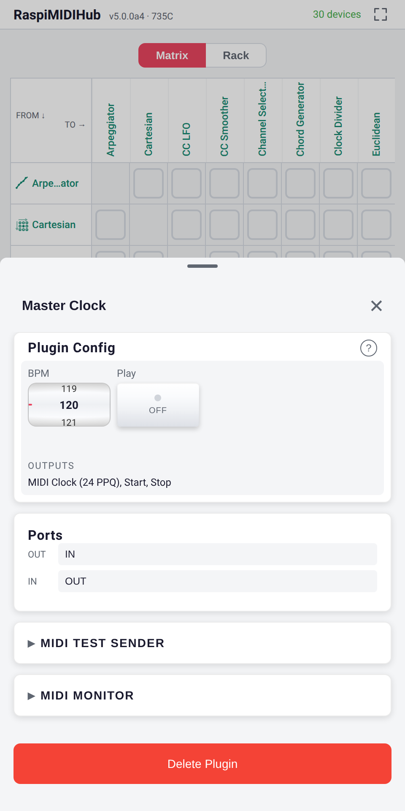
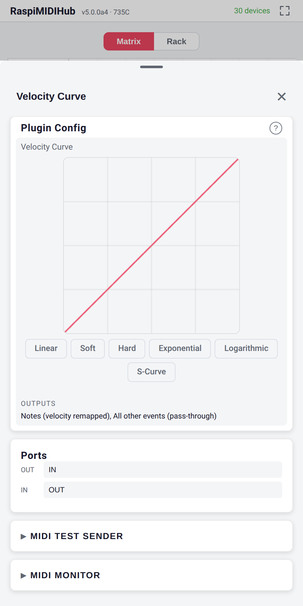

Open Source · No App Required
RaspiMIDIHub
Turn your Raspberry Pi into a plug-and-play USB MIDI hub with virtual instruments. Control everything from your phone's browser.



Turn your Raspberry Pi into a plug-and-play USB MIDI hub with virtual instruments. Control everything from your phone's browser.


Install on any Raspberry Pi with a single command. The Pi creates its own WiFi network automatically.
Connect USB MIDI devices -- keyboards, synths, drum machines, controllers. They're all routed to each other instantly.
Connect to the Pi's WiFi and open the browser. No app to install -- the full interface runs in any mobile browser.

See all your MIDI devices in a clean matrix. Tap to connect, long-press for per-connection filters and mappings. Live rate meters show MIDI activity. Add virtual instruments with one tap.

Filter MIDI messages on every connection individually. Block specific channels, message types, or set up complex CC-to-CC mappings with range scaling and inversion.

Virtual instruments and effects that appear as real MIDI devices in the routing matrix. Each plugin has its own custom interface with wheels, faders, toggles, step sequencers, and live scopes.

Hex-numbered tracker grid on a dedicated "Play" panel. Each of the eight voices has its own output channel, so a single Tracker drives eight different synths from one pattern. Notes, velocity and CC are entered per cell; the keyboard's q-row + 2/3/5/6/7 type chromatically. Hit Play (or Space) and the playhead walks the rows in time with your master clock.

Hold a chord, and the Euclidean voices it through a generated step pattern — the Bjorklund algorithm spreads N pulses as evenly as possible across M steps. Three stacked layers (algorithm, window wave, manual step grid) let you sculpt the result without leaving the play surface. Held notes can shift pitch in real time while the pattern keeps running.
Hold a note and the Cartesian voices it across a square grid (2×2–4×4) of semitone offsets, swept by two independent clocks: Rate steps the cells along a Path, while Inv. Rate climbs the chord through its inversions. One Fill Voicing knob fills the whole grid scale-aware — and the Root wheel flips between chordal and in-key diatonic harmony.

Fullscreen play surfaces (Mixer 8, FX 6, Performance 16, XY 4) that send CCs over MIDI in real time. Each cell is renameable, MIDI-Learnable, and themable. Four drop buttons per controller capture and replay snapshots, quantised to bar boundaries.


Every device gets a detail panel with a scrollable piano keyboard, CC slider, and live MIDI monitor. Test your setup without touching your gear.

Internal BPM clock with start/stop transport drives every synced plugin and external synth from one place. Clock ticks are pre-scheduled through the kernel-side ALSA queue for sub-millisecond jitter even under heavy CPU load.

Draw a custom 128-point velocity response curve to match your playing style or your hardware's quirks. Pick from preset shapes or freehand-draw your own — soft pads, hard drums, S-curves, anything in between.

Every plugin runs in its own thread, syncs to MIDI clock, and can be automated via hardware CCs.
Pattern player with step sequencer, accents, gate, and transport sync. Fullscreen play surface — Pattern and Rate as wide wheels, four shapers, eight-step grid.
Bjorklund-distributed step patterns from held notes. Algorithm (Pulses / Steps / Rotate), window wave (Phase / Cycles / Open) and per-step manual overrides on top. Internal Scale + Root, Jitter, Tune Spread, Fade In / Out.
René-style 2D grid sequencer. A held note is the root; a square grid (2×2–4×4) of intervals is swept by two clocks — Rate steps the cells along a Path (rows / cols / diagonal / knight / spiral), Inv. Rate climbs chord inversions. One Fill Voicing knob fills the grid scale-aware (Unison → Triad → 7th → Scale); the Root wheel switches chordal ↔ diatonic harmony.
8-voice step sequencer on a dedicated Play panel. Per-track channels, live recording, keyboard note entry, Cut/Copy/Paste with sub-cell selection.
Internal BPM clock with start/stop transport. Drives all your synced gear from one place.
Waveform generator with sine, triangle, square, saw, and sample-and-hold. Live oscilloscope output.
Play a single note, hear a full chord. 11 chord types with inversions and velocity scaling.
Shift all notes up or down by semitones. Simple, instant, automatable via CC.
Split your keyboard at any note into two MIDI channels with independent transpose per zone.
Turn a controller's buttons into a channel picker. Each momentary CC selects an output channel; the input channel is ignored and everything is re-stamped onto the active one. A live wheel shows the selection — perfect for displayless keyboards driving a channel-filtered routing matrix.
Quantize notes to musical scales -- major, minor, pentatonic, blues, and more. Never hit a wrong note.
Each Note On emits a pitch CC (base value ± semitones from a base note) before the Note On itself. Turns a keyboard into a chromatic player for samplers like the Volca Sample whose pitch is a CC, not a note.
Latch notes without a sustain pedal. MIDI-Learn the release note for hands-free toggling on stage.
Draw a custom 128-point velocity response curve. Presets for soft, hard, exponential, S-curve.
Normalize velocity to a fixed value or compress the range. Tame those dynamics.
Remove jitter from noisy knobs with configurable smoothing. Dual scopes show before and after.
Note delay with feedback repeats and velocity decay. Circular buffer architecture for rock-solid timing.
Shift every MIDI event forward by 1–100 ms to compensate synths whose own MIDI-in lands the sound late. ALSA-queue scheduled for sub-ms jitter; clock and transport pass through.
Divide an incoming clock by 2..32. Drive a slow LFO from a fast master, or feed half-tempo to one synth.
All Notes Off + All Sound Off on all 16 channels. The emergency stop you always need on stage.
Pick a .syx file in the panel; bytes stream straight to the connected synth (256-byte chunks, 5 ms gaps). Nothing saved.
RaspiMIDIHub was born from real live performance needs. Built by 2ndinterval -- a musician who performs live with synths and controllers.
Read-only filesystem means you can pull the power at any time. No SD card corruption, ever.
Creates its own access point. No venue WiFi needed. Works anywhere, even outdoors.
Share any device as a standard RTP-MIDI (AppleMIDI) session: link two hubs over a 100 m Ethernet cable, or play your gear from a Mac or iPad -- no extra software.
Full interface in any mobile browser. iOS, Android, desktop -- just connect and open the page.
Add or remove USB MIDI devices at any time. The hub adapts instantly.
Each plugin runs in its own thread with pipe-based wake-up for tight clock sync.
One tap in Settings checks GitHub for newer releases and installs them -- over Ethernet, USB tethering, or WiFi. No re-flashing the card.
Mirror any device's screen into OBS or a browser tab with near-zero latency. No screen capture -- the UI re-renders natively, crisp at any resolution, tap ripples and all.
LGPL licensed. Inspect the code, write your own plugins, contribute back.
One-line install on any Raspberry Pi:
curl -sL https://github.com/wamdam/raspimidihub/releases/latest/download/install.sh | bash